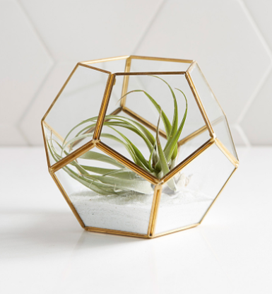
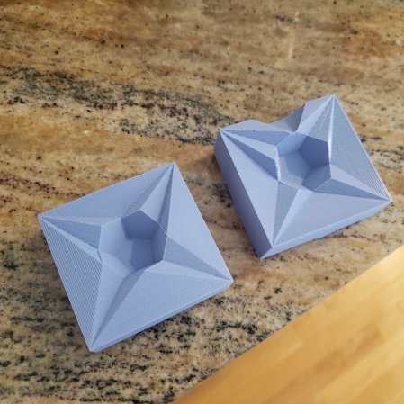

Dodecahedron Inspiration
As a low poly theme from my lamp shade design, I was inspired to make a Terrarium. I liked the idea of doing something geometric again because I wanted to make a really cool split line like the example from the class slides with the dice.


When I thought through how this design might be molded, I figured casting this is probably not the best way to make this due to its hollow nature. I decided to combine the two inspirations and just create a 12-sided dice (shape also known as a dodecahedron) which might come in handy while we are playing more games being indoors these days.
Designing the 3D Mold for a Silicone Mold
I first created the dodecahedron in rhino by using the rotate3D function with the pentagons and then the orient 3d to mirror the bottom 6 and the top 6. Then I imported a DXF I created of some curved numbers I created in Adobe Illustrator.
Once I got them all oriented on the faces and extruded, I was having about a 3 days’ worth of issues not being able to join and print these properly, so I had to go back and reorder my workflow. I learned that you need to be joining or using the Boolean union function early and often. You can always explode it later if you need to do something to it. Upon the second go around, I first created the dodecahedron then immediately created a multi-faceted plane that I would use as the mating surface.
I copied and pasted this shape twice and laid them down flat, one rotated 90 degrees and one -90 degrees. I enclosed both of these in a box for the silicone mold to hold into. I also added a cone at the top to allow an area for me to pour the plaster into.
I had a lot of trouble with Boolean unions and faces not being recognized with the embossed numbers. I printed my first mold without the numbers since I was pressed for time knowing the print was about 12 hours, the silicone rubber (OOMOO 30) would at least take 6 hours, and not knowing how fast the plaster of this volume would need to cure. I figured at the very least I can write things on the faces, maybe even customize!

I eventually got the numbers to work which would be printed the next day. I learned the font curves (or curves being brought in as a .dxf for that matter) should always be rebuilt (using the rebuild function and adding more points, I usually doubled the original amount) for best success. I was able to extrude and cap each number and do a Boolean difference right to the molding’s surface.
Since this print took that entire day, I mixed and poured the OOMOO started casting the numberless dice first.
Files (numbered dice):
Casting the Silicone Mold from 3D Printed Mold
This process was done pretty close to how the directions say on the box or any tutorial online. In order to know how much oomoo to actually make for both sides, I filled my square molds with water and filled both cups with them to measure how much volume I would need. Doing this I could mark where the oomoo should fill to. Since it needed to be 1:1 ratio, and the one mold without the cone obviously had less volume, I poured that water out and used the same volume in the other cup to mark it. I used the side with more volume to be conservative with the amount.
Once done I carefully poured both colors into the same cup at similar times. I’ve seen some people online do one at a time, but I didn’t want too much of one color getting stuck at the bottom when I mixed so I poured both simultaneously.
I followed directions online as well as inclass recommendations, mix until its all purple! I saw some hints of blue stripes sometimes so I made sure to keep mixing until that was all gone.
Before pouring, I slammed the cup to the counter quite a bit to surface any of the bubbles. After, I poured very carefully to create the “ribbons” in the pour so that the bubbles stretched out and dissipated upon reaching the 3D mold.
By the end of the cup, the oomoo started to get pretty lumpy. I think I was really slow stirring it because I didn’t want to create too many bubbles, but then with the slamming and careful pouring enough time passed it started to set. Luckily all of the surface was already covered, it was just the back face ended up being kind of lumpy. I let this set for 6 hours and it came out great!

Did the same process later with the numbered mold except I mixed faster and slammed more so I didn’t have to worry about pouring lumpy oomoo. I directed the beginning of the pour right at the numbers because I wanted to make sure they got filled. Was happy with the result!
Casting Plaster Dice inside the Silicone Mold
For the plaster mix, I looked online and used some class resources. A previous student Kellie Dunn and another guy online both used this “island” method for very different volumes so I did that with mine too. I found very quickly that a little bit of water goes a very long way. Since you have to use a decent amount of plaster to create the islands, the volume increases over double.
I created a mold setter by shoving the bottom back into the original mold just to hold that together, and then filling the rest with Styrofoam. I also used tape to make sure the top stayed together as well. I started pouring the plaster mixture in until I couldn’t see the hole in the top anymore. I figured this signified it was full.
When I opened it up, I was very happy with the results!
Once I was able to feel how easy the plaster was to break apart and brush off of the silicone, I started being less careful about my pour and just fill the entire funnel.
It easily broke off of the mold when it was done. One thing I didn’t like about the end result was that there were some imperfections with the lines from the filament that translated to the silicone which in turn meant the plaster. Another was that you could kind of still see where the parting line was. To fix these issues I lightly sanded the faces and edges. A little bit of sanding went a long way!
I repeated this process for the numbered dice as well. The numbers of the dice sometimes did not perfectly make the cast. Particularly numbers that had features in between that formed islands of plaster such as the 8 and particularly consistently the 6. I think this had to do with the depth of the embossing making the islands unstable as well as how small the font needed to be to fit on the face. Since I wouldn’t want to make the dice bigger I think I would play with the depth of the embossing to fix that issue.
< Back to Home